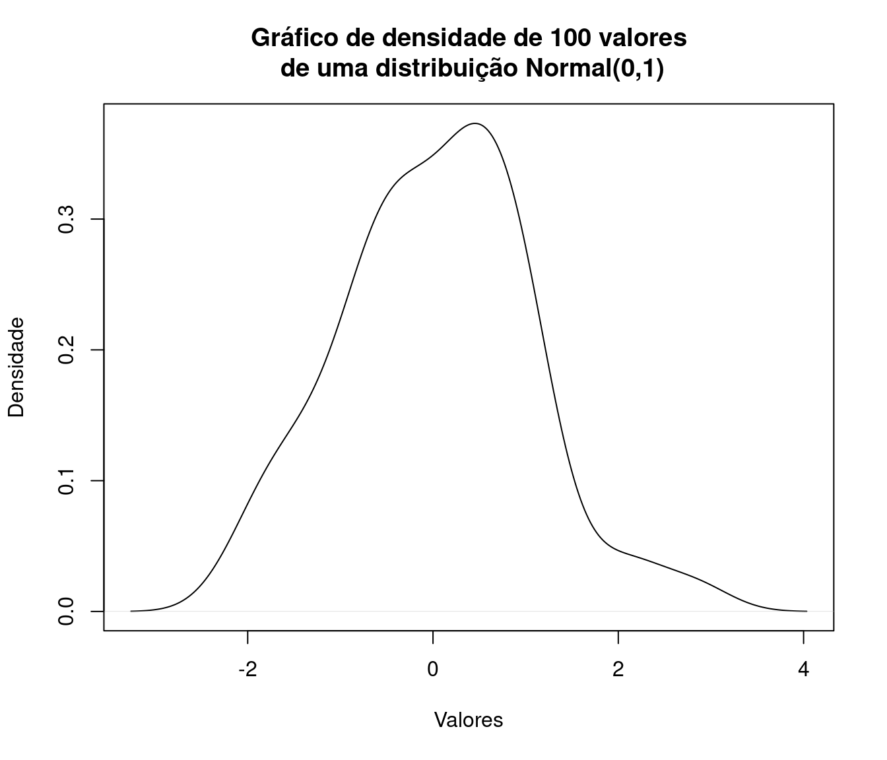
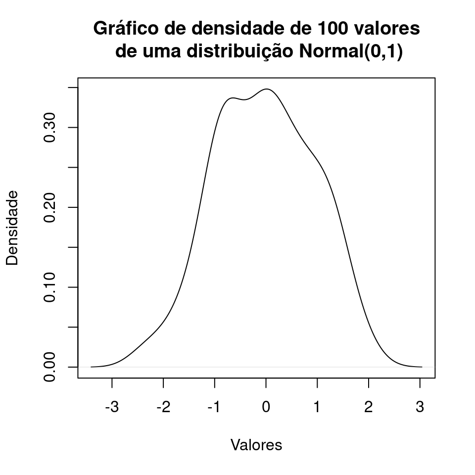

|
Relatórios HTML utilizando Rmarkdown
R Markdown
Markdown é uma linguagem simples de marcação que permite a geração de documentos nos formatos HTML, PDF, e MS Word.
O R Markdown, como o prórpio nome sugere, une a linguagem R com a linguagem de marcação Markdown. Desta forma, podemos escrever textos utilizando a linguagem de marcação e, em meio ao texto, inserir códigos R que geram saídas numéricas, tabelas, gráficos, etc.

Este breve tutorial foi preparado como material de apoio aos alunos da disciplina Métodos Estatísticos em Pesquisa Científica com intuito de servir como um pequeno referencial de como gerar relatórios com RMarkdown em formato HTML tendo em vista que na primeira aula do curso os alunos tiveram contato com a análise do perfil da turma 2020 que foi feita neste formato.
Como funciona?
O funcionamento do RMarkdown é diferente dos editores de textos tradicionais, como o MS word e outros, em que você edita um único arquivo.
Ao trabalhar com Rmarkdown terá dois arquivos: o primeiro deles é editável, isto é, nele você fará as edições como acrescentar texto, imagens e eventualmente códigos R; este arquivo tem extensão .Rmd. O segundo arquivo é resultado das configurações e inputs do primeiro, ou seja, é o nosso documento final e, como já mencionado, pode ser HTML, PDF e até mesmo MS Word, contudo focaremos no formato HTML.
Criar um arquivo Rmd
O vídeo abaixo mostra como criar um arquivo RMarkdown no Rstudio. Note que quando geramos o arquivo nos é fornecido uma versão preenchida por exemplos:
Caso o vídeo não seja iniciado automaticamente, pressione o botão direito do mouse e selecione o ‘play’ ou ‘mostrar controles’.
Renderizar o arquivo
Para compilar, isto é, gerar o output no formato HTML, basta clicar
no botão knit ou teclar ctrl+shift+k. Na primeira vez que
fazemos isso nos é pedido para salvar o arquivo numa pasta de nossa
preferência:
Caso o vídeo não seja iniciado automaticamente, pressione o botão direito do mouse e selecione o ‘play’ ou ‘mostrar controles’.
Preâmbulo
O preâmbulo é o que está no topo do nosso arquivo .Rmd e é responsável pelas configurações do nosso documento final, na extensão desejada. Por default, o preâmbulo quando geramos um novo arquivo é algo do tipo:
---
title: "Exemplo de relatório utilizando Rmarkdown"
output: html_document
---Contudo diversas outras opções são possíveis, um exemplo de cabeçalho com várias configurações de estilo para o formato de output html:
---
title: "Título do Documento"
author: # Autores
- Autor 1
- Autor 2
- Autor 3
output:
html_document:
# Sumário
toc: true
toc_depth: 3 # Profundidade do sumário
toc_float:
collapsed: true # Sumário flutuante (lateral)
number_sections: true # Seções numeradas
# Aparência
theme: flatly
# Temas possíveis:
# default,cerulean,journal,flatly,readable,spacelab,
# united,cosmo,lumen,paper,sandstone,simplex,yeti
# Códigos R no texto
highlight: espresso
# Temas possíveis:
# default, tango, pygments, kate, monochrome,
# espresso, zenburn, haddock, and textmate
#css: styles.css
# Configurações globais de imagens
fig_width: 7 # Largura
fig_height: 6 # Altura
fig_caption: true # Legenda
fig_align: 'center' # Posição
# Esconder o código
code_folding: hide
---Lembre-se que após toda alteração feita no arquivo .Rmd você renderizar novamente para que as atualizações sejam gravadas no output HTML.
Parte texto
Agora que sabemos como criar, renderizar e configurar a aparência do nosso RMarkdown, vejamos como trabalhar com títulos, formatação do texto, listas, tabelas, links, imagens, ou seja, tudo que não depende do R.
Seções
Seções e subseções podem ser criadas através do #, a quantidade de # define a hierarquia. Então o primeiro # é o início da seção, ## uma seção dentro da seção, e assim por diante:
# Nível 1
## Nível 2
### Nível 3
#### Nível 4Parágrafo
Novos parágrafos são criados com quebras de linha.
Parágrafo 1 - texto texto texto texto texto texto texto texto texto texto texto texto texto texto texto texto.
Parágrafo 2 - texto texto texto texto texto texto texto texto texto texto texto texto texto texto texto texto. Texto formatado
Podemos inserir textos formatados, como itálico, negrito, tachado e sobrescrito. Vejamos como proceder:
Itálico
_itálico_ ou *itálico*Negrito
__negrito__ ou **negrito**Tachado
~~Tachado~~Textosobrescrito
texto^sobrescrito^Listas
Podemos ao longo do texto criar listas de tópicos e estas podem ser ordenadas ou não ordenadas:
Desordenadas
- Item 1
- Item 2
- Item 3- Item 1
- Item 2
- Item 3
Ordenadas
1. Item 1
2. Item 2
3. Item 3- Item 1
- Item 2
- Item 3
Tabelas
Tabelas em Markdown são feitas da seguinte forma:
Coluna 1 | Coluna 2
----------------- | -----------------
Linha 1, Coluna 1 | Linha 1, Coluna 2
Linha 2, Coluna 1 | Linha 2, Coluna 2| Coluna 1 | Coluna 2 |
|---|---|
| Linha 1, Coluna 1 | Linha 1, Coluna 2 |
| Linha 2, Coluna 1 | Linha 2, Coluna 2 |
Os elementos podem ser alinhados de diferentes formas utilizando ‘:’ :
Coluna 1 | Coluna 2
:-----------------: | :-----------------:
Linha 1, Coluna 1 | Linha 1, Coluna 2
Linha 2, Coluna 1 | Linha 2, Coluna 2| Coluna 1 | Coluna 2 |
|---|---|
| Linha 1, Coluna 1 | Linha 1, Coluna 2 |
| Linha 2, Coluna 1 | Linha 2, Coluna 2 |
Links e imagens
Links podem ser inseridos em meio ao texto:
[Texto do link](url.com)O processo para imagens é similar:

Logo UFPR
Chunks
Os chunks são os elementos no Rmarkdown dentro dos quais podemos
inserir código R e configurá-los para exibir o que desejamos. Para abrir
um chunk em meio ao texto basta teclar ctrl+alt+i, ou
escrever os seguintes fragmentos (sem #):
#```{r}
#```Em geral estamos interessados em uma das seguintes alternativas:
- Exibir o código e o resultado.
- Apenas exibir o código, sem executá-lo.
- Exibir apenas o resultado, omitindo o código.
E para realizar tais tarefas existem configurações a serem especificadas no chunk:
Código e resultado
Para mostrar código e resultado basta utilizar o chunk tradicional, na forma mais básica:
#```{r}1+1## [1] 2Apenas código
Utilize o argumento eval que define se o código será ou
não avaliado:
#```{r, eval=FALSE}1+1## [1] 2Apenas resultado
Para omitir o código basta utilizar o argumento echo na
opção FALSE:
#```{r, echo=FALSE}## [1] 2Imagens
Como sabemos, o R é uma linguagem destinada principalmente para fins estatísticos, e em muitas situações fazemos uso do R para gerar gráficos. Como o Rmarkdown suporta e interpreta códigos R em meio ao texto e um gráfico gerado no R não é nada mais que a saída de um código, podemos inseri-lo no nosso relatório através de um chunk, uma opção bem mais razoável do que exportar o gráfico e depois inserí-lo como imagem externa da forma que já foi apresentada:
#```{r}
#plot(density(rnorm(100)),
# xlab = 'Valores',
# ylab = 'Densidade',
# main = 'Gráfico de densidade de 100 valores\n de uma distribuição #Normal(0,1)')
#```plot(density(rnorm(100)),
xlab = 'Valores',
ylab = 'Densidade',
main = 'Gráfico de densidade de 100 valores\n de uma distribuição Normal(0,1)')
Existem, para esta situação, uma série de argumentos que regulam tamanho e posição da imagem. Os principais são:
fig.align: define o alinhamento. Pode ser :'default','left','right','center'.fig.height: define a altura da imagem.fig.width: define a largura da imagem.
Existem diversos outros argumentos para customizar elementos de exibição, mas com estes é possível solucionar a maior parte dos problemas referentes a imagens resultantes de códigos R e acrescentados no documento via chunk.
#```{r, fig.align='center', fig.width=5, fig.height=5}
#plot(density(rnorm(100)),
# xlab = 'Valores',
# ylab = 'Densidade',
# main = 'Gráfico de densidade de 100 valores\n de uma distribuição #Normal(0,1)')
#```plot(density(rnorm(100)),
xlab = 'Valores',
ylab = 'Densidade',
main = 'Gráfico de densidade de 100 valores\n de uma distribuição Normal(0,1)')
Considerações finais
Como mencionado no começo deste material o objetivo era mostrar as principais funcionalidades para geração de relatórios no formato HTML utilizando Rmarkdown. Vale novamente ressaltar que esse é apenas um dos potenciais outputs deste tipo de documento, que pode ser convertido para formatos como PDF e, em outros casos mais gerais, serve também para geração de apresentações em slides.
Contudo, tratando do formato HTML, é uma forma leve, flexível e estética de se gerar relatórios e reportar resultados em que a maior vantagem é a possibilidade de inserir outputs do R, o que evita situações como, por exemplo, gerar uma tabela ou gráfico no R, exportar e depois reimportar em um editor de texto.
Além disso, o Rmarkdown facilita a vida do analista em situações recorrentes, por exemplo, imagine a seguinte situação: toda semana receber um conjunto de dados com a mesma estrutura e precisar gerar um relatório contendo resumos numéricos, tabelas e gráficos. Utilizando o Rmarkdown bastaria alterar o conjunto de dados e toda a análise seria feita automáticamente.
Além de outros formatos de output não tratados aqui, vale citar a existência dos arquivos .Rnw, que possuem a mesma sintaxe e estrutura de documentos de texto do formato Latex (.Tex) que permitem, tal como no Rmarkdown, a presença de códigos R em meio ao texto.